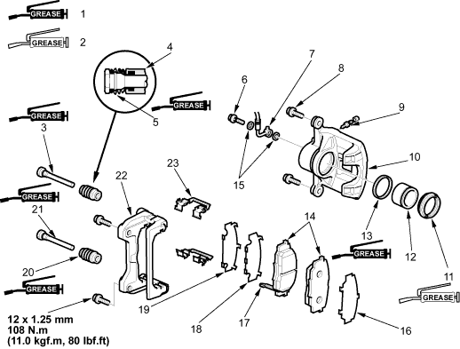

CAUTION
CAUTION
Frequent inhalation of brake pad dust, regardless of material composition, could be hazardous to your health.
- Avoid breathing dust particles.
- Never use an air hose or brush to clean brake assemblies. Use an appropriate vacuum cleaner.
Conventional Brake Components
|
19-5 |
Frequent inhalation of brake pad dust, regardless of material composition, could be hazardous to your health.
|
Remove, disassemble, inspect, reassemble and install the caliper and note the following items:
 |
|